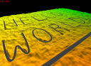

Graph1 example
This example is based on the "terrain3" example of the terrain plugin, with two modifications: the fractal terrain is replaced with a precomputed one, with a precomputed texture as well, and a road graph is used, via layers, to modify the terrain shape and texture procedurally (based on the paper "Real-time rendering and editing of vector-based terrains", Eric Bruneton and Fabrice Neyret, Eurographics 2008).
Precomputed terrain
The replacement of the fractal terrain with a precomputed one is done as in the "terrain4" example (see sec-terrain4-res), and is not detailled here. The replacement of the procedural texture with a precomputed one is also very similar: we first define an ortho CPU producer to load the tiles from disk to main memory (in a tile cache on CPU):
<tileCache name="groundOrthoCpu" scheduler="defaultScheduler"> <cpuByteTileStorage tileSize="196" channels="4" capacity="1024"/> </tileCache> <orthoCpuProducer name="groundOrthoCpu1" cache="groundOrthoCpu" file="RGB.dat"/>
We can then reference this CPU producer from the OrthoGPUProducer:
<orthoGpuProducer name="groundOrthoGpu1" ortho="groundOrthoCpu1"
Graph based elevation and texture layers
In order to define layers based on vector data we first need a graph producer, which will produce graph tiles by clipping and flattening a root graph. We also need a tile cache to store the produced graph tiles on CPU. This is done as follows:
<tileCache name="graphCache" scheduler="defaultScheduler"> <objectTileStorage capacity="2048"/> </tileCache> <basicGraphFactory name="graphFactory"/> <graphProducer name="roads" cache="graphCache" factory="graphFactory" file="roads" doFlatten="true"/>
This defines a cache that can store up to 2048 graph tiles, and a graph producer using this cache, and using as root graph the "roads.graph" file. The graph factory specifies which kind of graph implementation we want (lazy or not, hydro graph or not, etc).
Adding a layer using this graph to the ortho GPU producer, in order to draw roads on the terrain, is then very easy:
<orthoGpuProducer name="groundOrthoGpu1" ortho="groundOrthoCpu1" cache="groundOrthoGpu" backgroundCache="groundOrthoGpu"> <roadOrthoLayer name="roadOrtho1" graph="roads" renderProg="roadLayerOrthoShader;" quality="true"/> </orthoGpuProducer>
We simply need to declare a proland::RoadOrthoLayer layer as a sub-element of the producer declaration, with a reference to the previous graph producer, and to the shader that will effectively draw the roads in the texture (see below). Note that we also need to add a "backgroundCache" attribute in the ortho GPU producer itself. This is necessary when layers are used with a precomputed texture (this cache may be different from the "cache" one).
Adding a layer using the above graph producer to the elevation producer, in order to deform the terrain where there are roads, is a little more complex. Indeed the proland::RoadElevationLayer needs a producer, on CPU, that can compute the raw terrain elevations, as the elevation producer does on GPU (it needs it to compute road elevation profiles). This is the role of the proland::CPUElevationProducer, which is declared as follows:
<tileCache name="groundElevationsCPU" scheduler="defaultScheduler"> <cpuFloatTileStorage tileSize="101" channels ="1" capacity="1024"/> </tileCache> <cpuElevationProducer name="groundElevations2" cache="groundElevationsCPU" residuals="groundResiduals1"/>
Note that we only need one channel per pixel, and that the tile size must be the same as the one used by the GPU elevation producer. We can then declare a proland::RoadElevationLayer in the elevation producer on GPU:
<elevationProducer name="groundElevations1" cache="groundElevations" residuals="groundResiduals1"> <roadElevationLayer name="roadElevation1" graph="roads" cpuElevations="groundElevations2" renderProg="roadLayerElevationShader;" level="2"/> </elevationProducer>
Here we specify two producers for this layer, the one producing the graph, "roads", and the one producing the raw elevations on CPU, "groundElevations2". We also specify the shader that will actually modify the terrain elevations, "roadLayerElevationShader" (see below). Finally the "level" attribute specifies that this layer must not be used for quadtree levels less than 2.
The "roadLayerOrthoShader.glsl" shader is used to draw triangle strips covering roads, with a uv parameteriztion along the strips. The vertex shader simply scales and translates the input vertices with the given "tileOffset". The fragment shader computes a color and an alpha mask, which will then be blended into the raw terrain texture. In this implementation this shader computes roads stripes procedurally, but you can easily change this (as an exercise: try to add an "asphalt" texture to roads - hint: look at the "texturedPlastic.xml" and "texturedPlastic.glsl" files in the Ork examples). Note that you can change this shader will the program is running, to immediately see the effects of your changes on the appearance of roads.
The "roadLayerElevationShader.glsl" is similar. In addition to the vertex coordinates it also takes as parameter, in the "uv" vertex attribute, the vertex elevation and its distance to the road axis (relatively to the road width). It must output the road elevation in the blue channel, an alpha value, and a fragment depth (to ensure that crossing roads blend nicely). The current implementation is very basic but you can easily change it, including while the program is running (to immediately see the effects of your changes on the appearance of roads).
The output road elevations and alpha coefficients are then blended into the raw terrain elevations with the "blendShader.glsl" shader (you can specify another name with the "blendProg" attribute in the elevation producer resource).